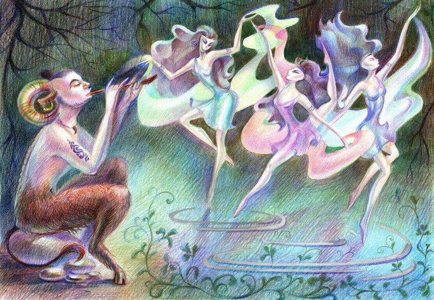
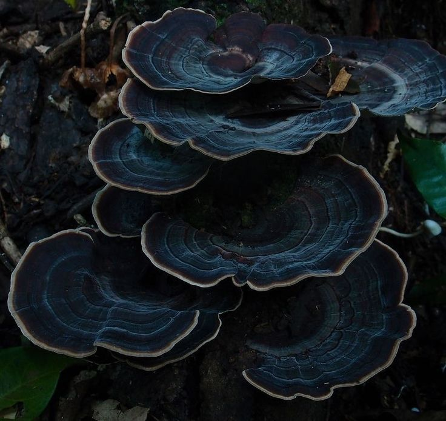
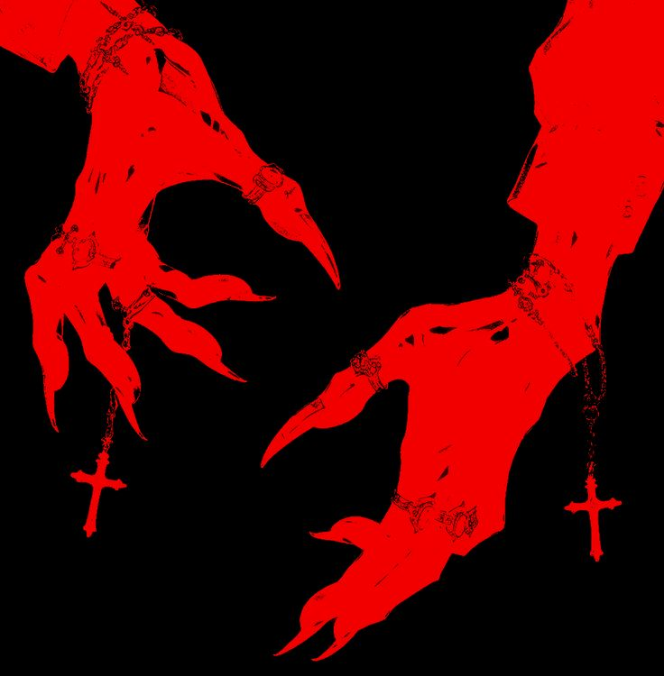
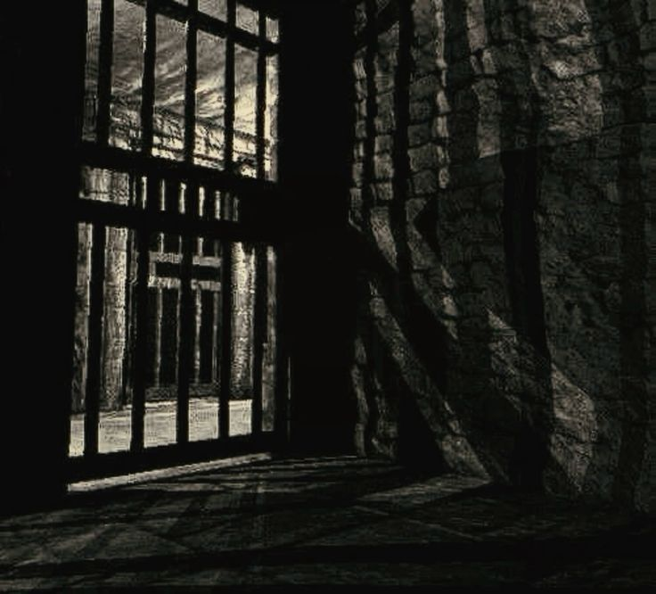

Любит свободу и ненавидит, когда её пытаются сковать в чьи-то рамки. Любопытная, добрая, но с острым языком. На агрессию отвечает словесной агрессией — кулаки вторичны.
«Мужи на этих землях — лишь трофеи. Никто из них не был мне близок так, как муж из моих снов... локоны его, аки рыжий огнь на рассвете.»
Девушка родилась в прекрасном измерении Сильванов, края, идеже обитают лишь сатиры, лесные девы да малое племя фей. В мире властвовали покой да согласие, а дни текли в бесконечных плясках да песнопениях. Однако, хоть весь род её извечно держался за родные отчие пенаты, душа Эсмы с малых лет вожделела иного. Взоры её устремились за далёкие горизонты — в земли, лежащие далеко за пределом лесного царства.
В одну из ночей явилась ей таинственная дева, чьего лика Эсма прежде никогда не видывала. Божество это предстало в образе причудливой и дерзкой Арлекинки, облаченной в роскошный, расшитый золотом ало-черный наряд. За её спиной развевался огромный плащ-капюшон, напоминающий диковинный фрукт или шутовской колпак с золотыми бубенцами, что сладко позвякивали в такт её незримому танцу. Руки богини покрывали изящные узоры, а ноги её были закованы в чистое золото, на её ботфортах красовались загнутые носки, подбитые мехом. Она легко парила в воздухе, словно бабочка, а на плече её покоилась огромная, богато украшенная секира, лезвие которой было похоже на золотой полумесяц с изображением солнца, а рукоять заканчивалась грифом необычной лютни.
И промолвила гостья, что ждут Эсмеральду впереди великие приключения — узрит она и горы злата, и славу ненаглядную, и обретёт семью новоявленную, что станет греть её душу пуще прежней. Девушка же верить на слово не спешила и откровенно заявила об этом, потребовав верного доказательства. Богиня лишь кротко рассмеялась, видя юную дерзость насквозь.
Под подушкой что-то твёрдо упиралось в затылок. Заглянув туда, Эсма обнаружила тугой мешочек, полнехонький золота, коего прежде у неё точно не водилось. То был знак свыше — призыв идти вперёд к новым открытиям да возносить щедрые дары своей заступнице.
Набравшись смелости и дерзости, девушка пошла вести переговоры с родителями. Помыслив, отец и мать благословили своё чадо, отпуская её на свет — дабы мир повидала, да судьбу свою обрела. А коли не найдет доли — дом родительский да братья с сестрами извечно ждут её.
К 15-ти годам девушка нашла пристанище среди людского рода, привыкая к их обычаям. Увы, уходя из дома, не ведала она о простых и тяжких вещах: о добыче пропитания, строительстве крова да нужде в звонкой монете. Был риск велик сгинуть от голода в первый же год, но привыкшая к вольной жизни Эсма без ропота ночевала в росных лугах, а на пропитание зарабатывала в шумных корчмах пением да плясками.
Настоящие же испытания настигли её лишь к 18-ти годам, когда проснулась она в цепях на палубе неизвестного корабля, в окружении незнакомцев и пиратов...

Пробуждение же вышло отнюдь не сладким: в душный воздух въелась смердящая мешанина из тяжелого людского пота, тухлой рыбы да приторной сладковатой смуты — то ли от дешёвого хмеля, то ли от чужеземных пряностей.
Эсмеральда была вынуждена сотрудничать с новыми людьми, так как скрутила их единая беда — нужда сбежать с проклятого острова. Девушка и одна бы утекла, да ошейник удушливо сжимал горло, а вплавь пускаться... Здешний мужик опробовал сей путь и память о его судьбе Эсма доселе старалась выжечь из разума.
Но, вопреки паршивому началу и частым перепалкам, этот вынужденный союз со временем перерос в нечто большее. Наладить связь удалось далеко не со всеми и далеко не сразу, однако сквозь шторма и взбучки сатирка всё же обрела в этой разношёрстной компании настоящих друзей.
Одно из событий произошло в самой чаще древнего леса, когда перед девой предстали мать да отец. Со слезами на глазах родичи умоляли дочь вернуться под родную сень, ибо прозрели в мрачных видениях её скорую погибель. Сердце Эсмы терзалось тоской, но отказаться от духа приключений и зова дороги она так и не смогла.
После очередного подношения своей божественной заступнице, величавая гостья вновь явилась Эсмеральде во сне. Прежде богиня лишь кротко хихикала, принимая дары, но в эту ночь нарушила молчание:
«Желаешь ли узреть судьбу свою? За то потребуется плата, однако лик суженого того стоит.»
И сотворилось по слову её. Глубокие синеватые оттенки океана вмиг рассеялись, уступив место бескрайнему вечернему полю. Закат мягко угасал за горизонтом, а подле неё, прямо на шелковистой траве, восседал муж в белоснежной рубахе да простых холщовых штанах. Паче всего приковали взор девы его волосы — пышные, алые кудри, спадающие на плечи.
Но не только грибы оставили на ней след. За свой скверный язык Эсма успела схлопотать проклятье от местной карги. Юный внук той ведьмы искренне любил сатирку, дарил цветы и жаждал семейного тиха, а она мчала за волей. В одном из боёв парень вступился за неё и пал от рук нежити. Бабка же прокляла девушку.
«Да покуда душа твоя черна и жадна до денег да воли, вовеки ты будешь жаждать их! Взгляд твоих бешеных, огненных глаз всегда будет падать на мужей... Заклятие снимешь лишь тогда, когда любовь твоя ответ даст положительный, да жизнь ты свяжешь с ним так же крепко, как узел речной».К концу походов, когда беды улеглись, Эсмеральда пообещала принцу стать его женой, думая, что так можно обойти проклятие. Но проведав, что её ждёт лишь роль красивой игрушки в гареме, она бежала в ночи вместе с орком-моряком из своей компании.

К двадцати годам Эсмеральда простилась с орком и вновь ушла в одинокое плавание, стараясь избегать больших городов. Повсюду висели листовки с её портретом и сулящий богатство наградой: обиженный шейх жаждал вернуть то, что так дерзко от него сбежало.
«Мужи на этих землях — лишь трофеи: скопишь, помнишь малое время, а после выбрасываешь из головы. Высокие, статные или тихие — лица их мешаются в единое месиво, являясь ночью в кошмарах. Никто из них не был мне близок так, как муж из моих снов... Локоны его, аки рыжий огнь на рассвете.»В одну из ночей судьба улыбнулась девушке: повезло ей сыскать не просто спутника на ночь, а истинного наставника. Мужчина оказался человеком начитанным да духом мудрым. Его сказания об искусных противоядиях, хитрых взрывных зельях да о том, сколь много чудес таят в себе простые травы, пленили сердце Эсмы. Возымела она желание стать его ученицей.
Желая отвлечься от поиска средства от проклятия и скопить монеток на путь к провидцу, Эсма путешествовала одна. Сие путешествие принесло ей славу: если ранее её знали лишь на далеком острове, то ныне имя её обошло многие корчмы. Пела она бесплатно, и в народе её прозвали «Маковой усладой».
Встретив на своём пути новую компанию, девушка с радостью согласилась на совместное путешествие. Это было самое короткое, но самое насыщенное приключение: ночёвки на лугу, освобождение принцессы, переговоры с древним драконом...
Чтобы пробраться в поместье Барона, Эсма устроилась туда под видом приглашённой артистки на ежегодный «Бал Утопленников». Вооружившись своим обаянием, сатирка умело обчистила его сокровищницу, утащив реликвию — небольшие часы на цепочке. Но безделушка оказалась проклятой.
Украшения на её рогах появились позже, когда прежняя партия сатирки пала при дворе короля от рук гвардии, а сама Эсма выжила лишь чудом. Из наивной девочки к двадцати семи годам она выросла во взрослую, яркую личность. Проклятие блуда доселе не снято.

Почти год Эсмеральда делила хлеб, дорогу и песни с ватагой «Золотого Посоха». Это были не просто музыканты, а вольные души, чародеи звука и короли дорог, не знавшие над собой иной власти, кроме ритма сердца. Вместе с ними сатирка залечила раны прошлого.
Это случилось в ночь Полнолуния, на высокой горе, когда звёзды казались так близки, что можно было коснуться их рукой. Ватага устроила великий пир — не поминальный, но праздничный, в честь новой стези своей сестры.
Старый гном Борин надел на запястья Эсмы тяжёлые, чеканные кольца из тёмного серебра:
«В этих кольцах гул горных недр и крепость камня. Коли задрожит рука или ослабнет дух, коснись их. Помни ритм земли.»
Эльфийка Лиэль протянула длинное ожерелье с подвеской в виде круглого красного камня, напоминающего цвет мака:
«Пусть этот рубин хранит твой чарующий голос и сладость твоих речей.»
Ян, молодой скрипач, пробил ей перегородку в носу и нанёс татуировки:
Уснув в одной толпе под светлым солнцем, девушка очнулась от криков. «Последний глаз Берсерка» — отряд солдат, что уничтожал людей на своём пути. Из-за полученной информации от дознавателей, солдаты скрутили и схватили сатирку:
«За падение к скверне, за использование знаний запретных, за развращение людей из простого рода — вы будете приговорены перед судом на смертную казнь.»Но Эсмеральда выжила. Как и всегда. Ведь Арлуна одаривает её удачей... а она хватает эту удачу всегда за хвост.